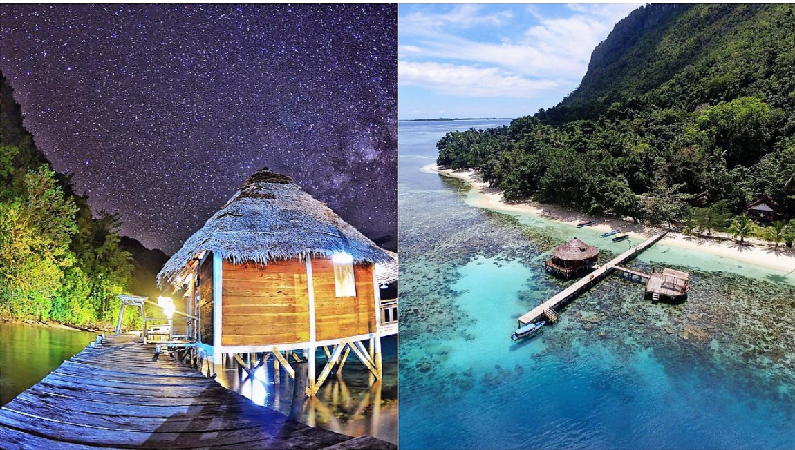
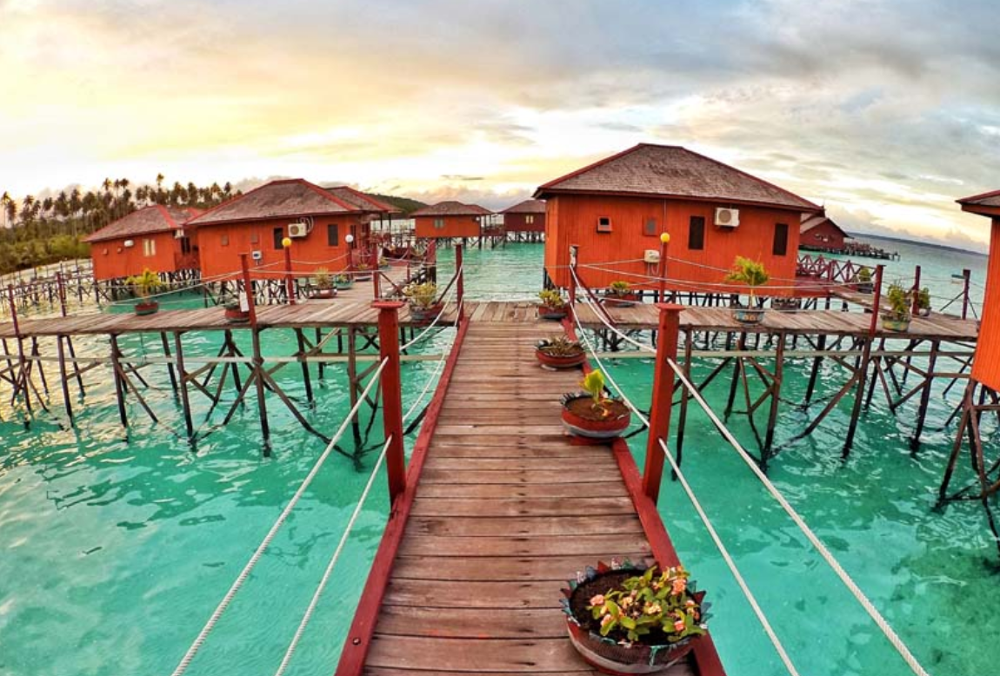
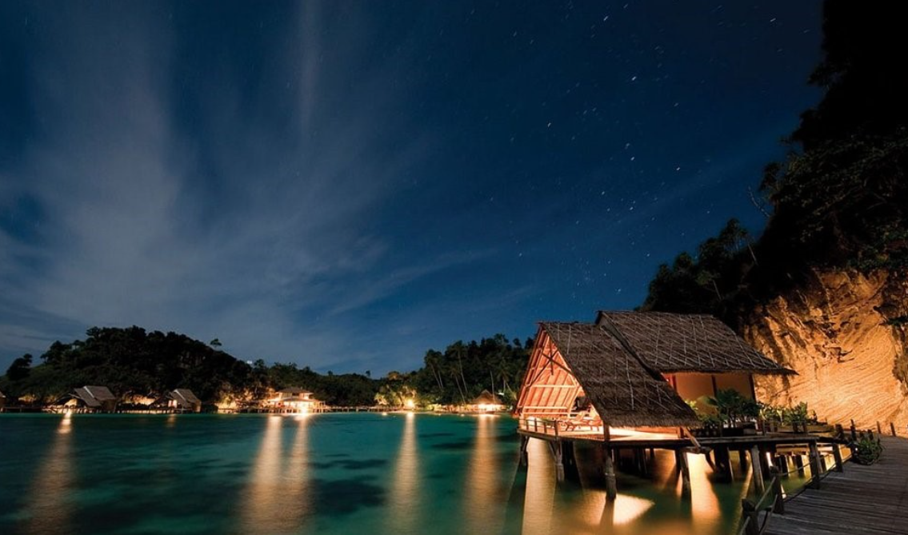

Ora Beach Resort, Maluku

Panorama perbukitan yang hijau dipadupadankan dengan pasir putih di kejauhan, laut biru dengan pemandangan koral di bagian dasar, menikmatinya langsung akan memberikan kepuasan tersendiri yang tidak bisa diterjemahkan lewat kata-kata biasa.
Ora Beach Resort pun menjadi spot paling pas untuk menikmati itu semua meski hanya untuk semalam saja. Namun, saya ragu kamu akan puas jika hanya tinggal sehari semalam di cuilan surga ini.
Lokasi: Saleman, Seram Utara Barat, Maluku Tengah, Maluku.
Yuk segera cek Ora Beach Resort
Maratua Paradise Resort, Kepulauan Derawan

Kepulauan Derawan di Kalimantan Timur menyuguhkan sejumlah objek wisata bahari menawan yang sudah dikenal oleh wisatawan mancanegara. Tapi apakah kamu sebagai orang Indonesia pernah mengunjunginya?
Maratua Paradise siap menjadi markasmu di kepulauan cantik ini. Terbuat dari kayu dengan fasilitasnya yang istimewa, untuk sesaat, kamu bisa merasakan keindahan dunia dari sisi yang berbeda.
Lokasi: Jl. Langoan, RT. 3, Teluk Harapan, Maratua, Tlk. Harapan, Maratua, Kabupaten Berau, Kalimantan Timur.
Yuk segera cek Maratua Paradise Resort
Misool Echo Resort, Papua

Tidak perlu berbicara mengenai pemandangan bawah laut yang sudah mendunia ataupun panorama alam pulau Misool yang juga istimewa. Semuanya berada dalam kesatuan yang indah dan tidak mudah menggambarkannya hanya dalam beberapa kata.
Ingin menikmati keindahan itu secara langsung, Misool Eco Resort menjadi water villa di Indonesia Timur yang tepat untuk dipilih. Letaknya memang tersembunyi, tapi popularitasnya sudah mendunia, lho!
Lokasi: Misool, Lilinta, Misool Barat, Raja Ampat, Papua Barat.
Yuk segera cek Misool Echo Resort